08Watch
Videos.
The engineering, and the cartoon twin who comments on it. Real-robot shots are labelled concept renders until there is real footage.
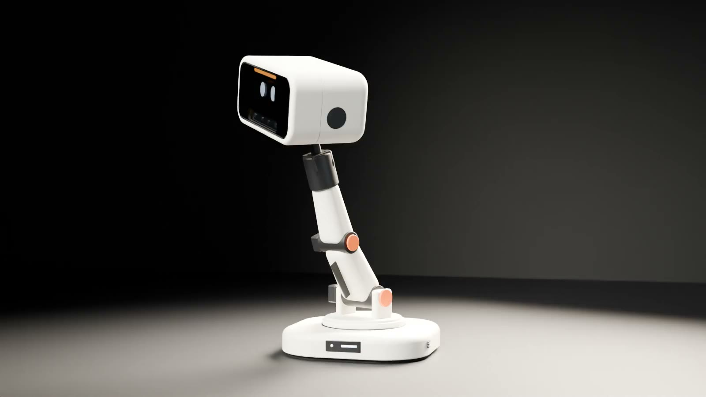
A six-joint desk robot with a screen for a face, being designed and built at home by one maker. The head is designed and its electronics have passed bench tests, board by board. Nothing is assembled yet. The spine is next.
About 540–600 mm tall when awake. A base that turns, a spine that bends, and a head that looks, nods and tilts. The goal is a robot that reacts to the people around it with posture, light and a face, not a chat window on a stick.
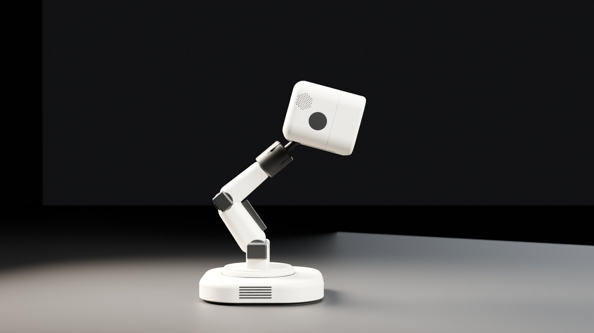
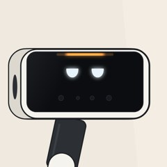
He spent months on my neck, then named me after it.
Designed in Fusion 360, around parts that are already bought and tested. Three servos on their own bearings, a depth camera, a touch screen face, microphones, a speaker and a light bar that is meant to move with the voice. The joints are built as subassemblies (a J4 cassette, a J5 cradle, J6 bearing cartridges) rather than one big print, and the shell is held on with screws.
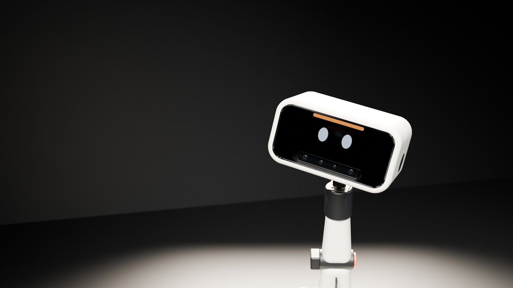
Motion
Turn, nod and tilt, each joint on its own bearings. Bought; not yet run on the bench.
Face
18 designed expressions. No mouth: the light bar is the voice.
Vision
Stereo depth camera behind the smoked window.
Hearing
A microphone array in the head, with a physical mute.
Light
A 16-pixel light bar across the top of the face.
Control
Real-time head I/O on the ESP32. The brain on the Pi.
The outside of the head, version by version. Each one changed for a reason found in CAD, not by taste. Shown at the same scale; the inside is not shown.
Chosen from five shape ideas. Wide window, ears on the nod axis.
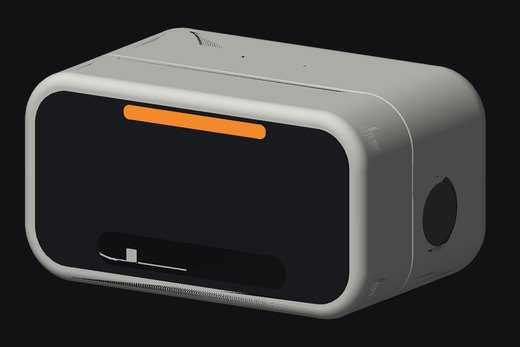
Re-cut around a compact neck, so the head can nod and tilt fully.
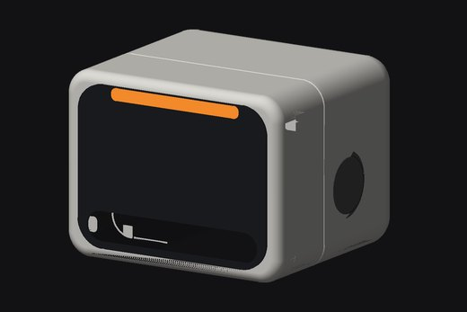
Squeezed for a compact layout. It failed: the cables could not bend inside it.
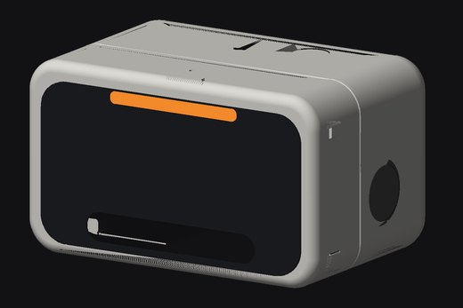
Widened so every cable bends safely, with no adapters.
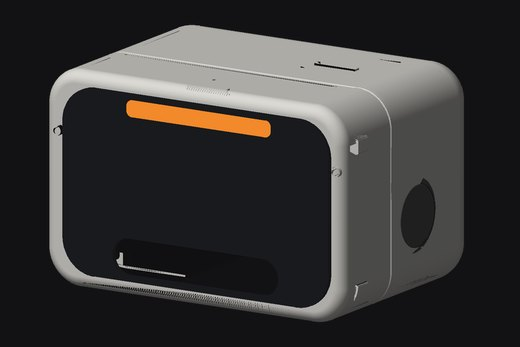
Slimmer again, screen tight behind the glass, and no glue anywhere.
This is my head. Version five. I've stopped asking.
The head is packed with sensors so NOD can react the way a pet does: turn to a sound, look up when you walk in, lean into a pat. Each one is labelled with where it really stands.
Stereo depth camera behind a smoked window, with its own motion sensor. Streams to the Raspberry Pi 5.
Four-microphone far-field array, made for voices across a room. It has a real mute button and a red light, not a software promise.
mmWave radar sensors, made to sense people even when they sit still. They work on the bench. They go in the base, which is not designed yet.
Ambient light sensor, planned behind a small window in the forehead, so his face and light bar can dim at night.
Hidden touch pads inside the shell, read by a capacitive touch board. The board is bought; its mounting is being added to the head, and testing waits for the real shell.
Piezo tap sensors in the shell, so a knock on the head gets a reaction. How many, and where, is settled by a small bench test first.
Touch on the face itself, separate from the shell pads. Touch, animation and power-cycle recovery passed on the bench.
40 mm speaker in the head, and a light bar across his brow that is meant to move with his voice. No mouth, on purpose.
Each circuit board in the head was bought and tested on the bench, on its own, before the design was allowed to depend on it. These are electronics tests, not a working head: nothing is assembled yet, and the three head servos haven't run. The results are measured, not estimated.
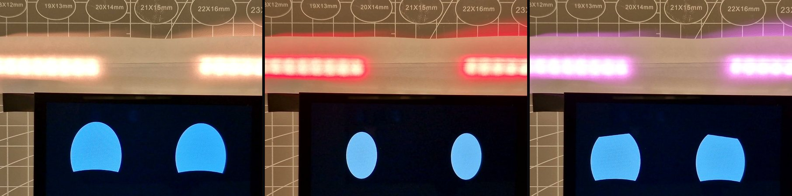
Power-cycle recovery, animation and touch: passed. NOD's 18 expressions now run on it, with the light bar colour-matched. Eyes and colour confirmed; the rest of the checklist is still open.
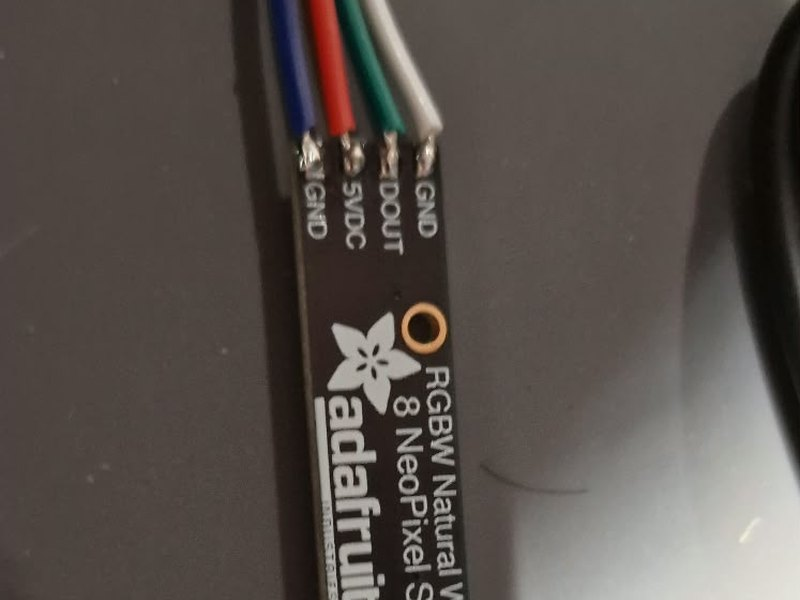
0.63 A at 4.84 V with all 16 pixels fully on.
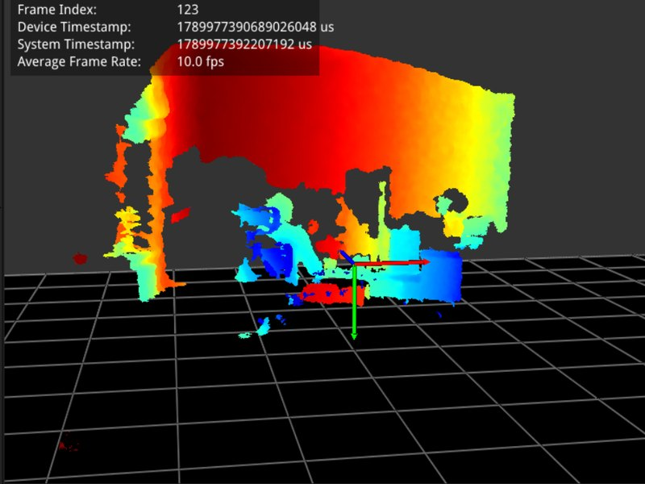
Sustained stream, reconnects and Raspberry Pi 5: passed.
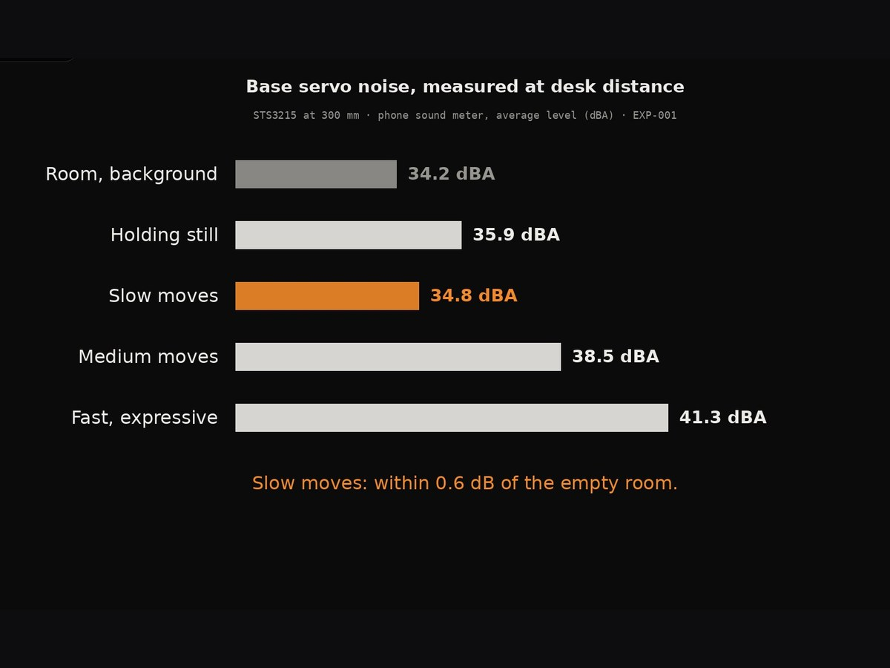
Base servo at desk distance: slow moves 34.8 dBA, against a quiet room at 34.2.
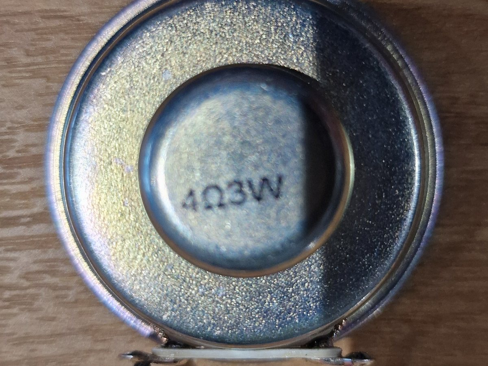
Standalone bring-up: passed. In-head listening test waits for an assembled head.
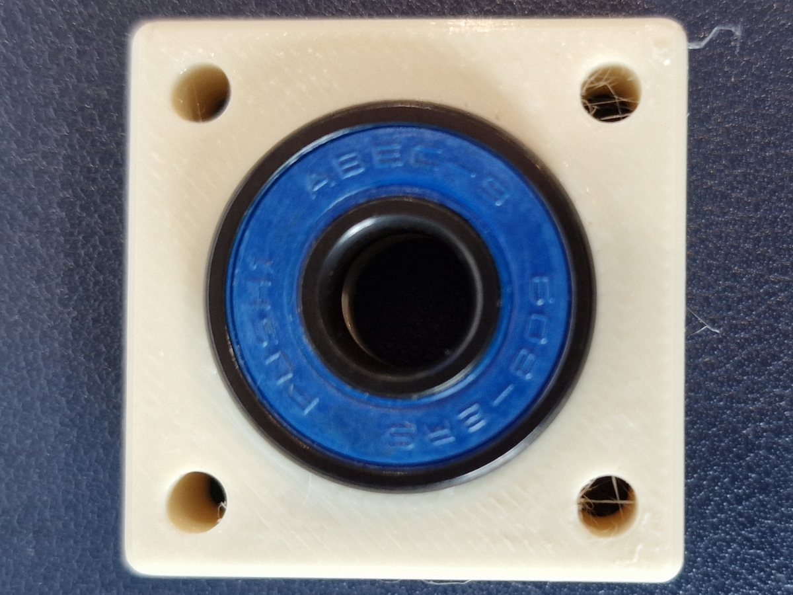
Bearing-pocket fit proven on a printed test coupon before any joint was designed around it. Also passed: the USB backbone, four devices through one hub with power-cycle recovery.
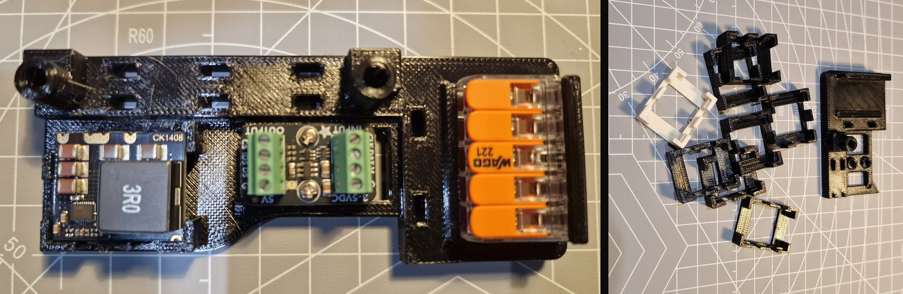
Every physical test so far, in order. Simulations, reviews and datasheet research are not counted.
The light bar draws 0.63 amps. I'm told that's "fine". I'd like it in writing.
NOD is meant to act on his own: notice you, look up, lean in, settle down when the room goes quiet. That only works if every move stays inside limits that are written down and proven. The control software is being written for NOD, in four layers.
Its own small board and firmware. It checks every move against NOD's limits, and watches load, heat and the link to the brain.
Turns "look at that" or "settle down" into smooth moves between poses, planned inside the limits.
Decides what NOD wants: asleep, idle, noticed you, paying attention, talking. AI helps choose words and intent.
Depth camera, microphones, radar and touch tell the behaviour layer what is happening, and how sure they are.
Not the behaviour, not a learned habit, not an AI. If the brain goes quiet, NOD holds still and then settles slowly.
An AI model can ask NOD to pay attention or look pleased. It never sends a motor angle.
Every limit has a measured characteristic, a method and a reaction, and each one is proven on the bench rig before the firmware enforces it.
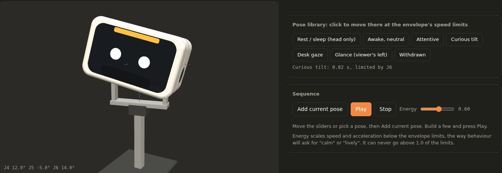
Three kinds of claim, kept apart: what is physically built and tested, what exists only in CAD, and what is still a plan.
CAD puts it at 1.0 to 1.3 kg. So the spine is not designed yet: it waits until the real head is printed and weighed.
The narrowest shell looked best, but straight cables could not bend inside it. The head got wider again.
The head is designed with no glue at all: heat-set inserts and screws throughout, so a failed board is a repair, not a reprint.
Hardware and software move side by side, and every stage ends in a test. Nothing on the robot gets built on a part that has not passed its own.
Each head board, on the bench.
DoneFusion master, fit prints.
DoneThe whole head on a post, its limits proven, weighed.
NowSafety firmware, face, voice, then senses and first behaviours.
NextLift, hold, fail safely.
PlannedSwivel, power, sensors.
PlannedEverything powered at once, an hour with no resets.
PlannedFace, light, voice and posture together.
PlannedDays of running for wear, then the final shell.
PlannedThe engineering, and the cartoon twin who comments on it. Real-robot shots are labelled concept renders until there is real footage.
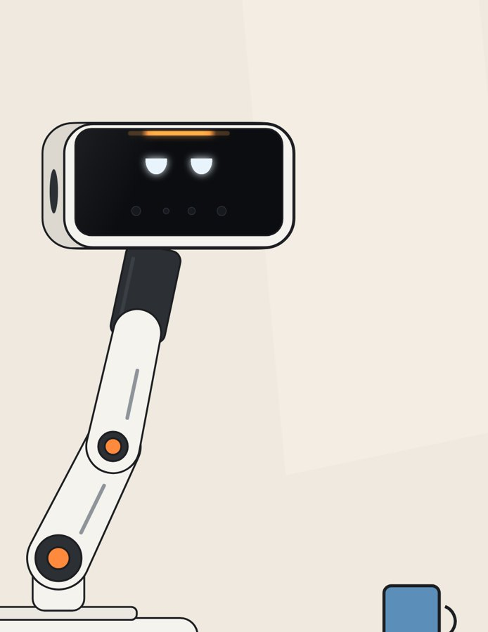
Same head, same joints, same face and voice files as the real robot. Fictional, dry and occasionally right. Find him on @GraymattorWorks.
The head goes on the bench rig next: servos running, the real head weighed, and then the spine is designed around that number.